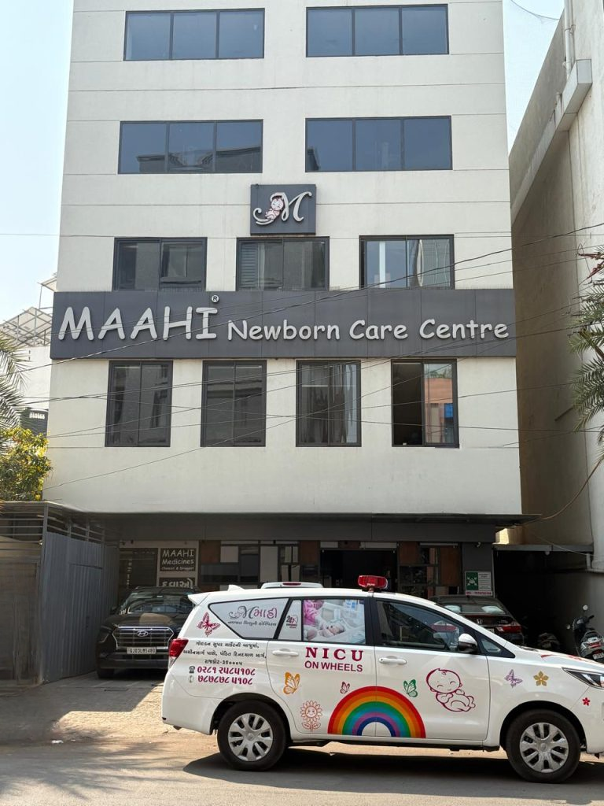
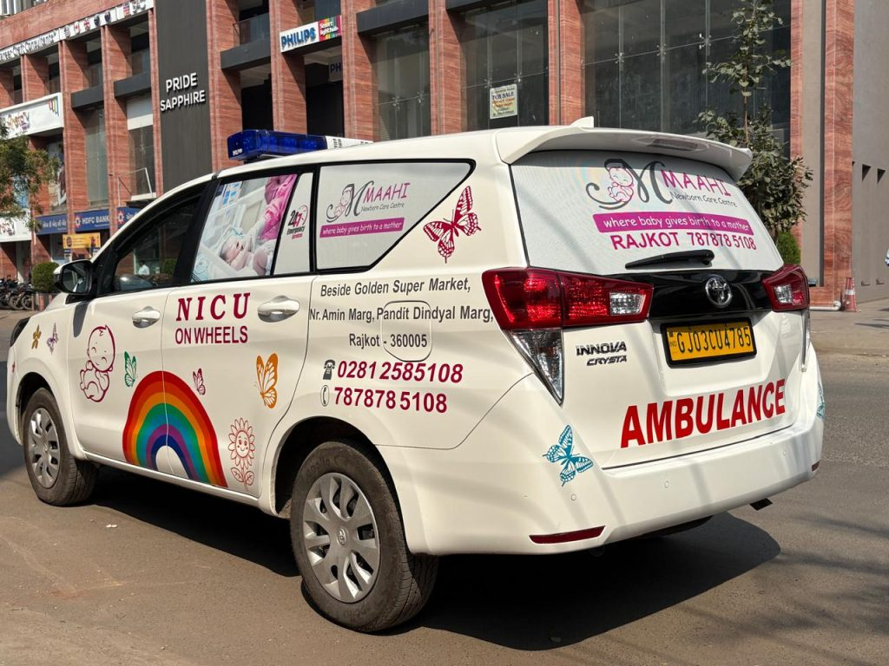
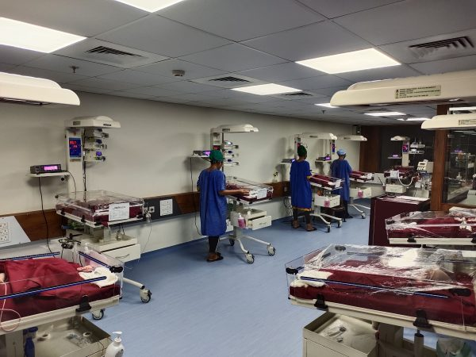
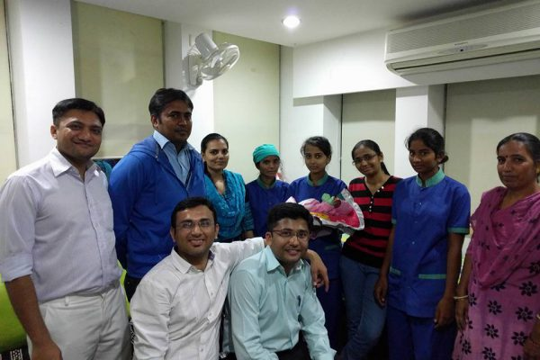

Rajkot's exclusive neonatal centre
Advanced Level III NICU & newborn care in Rajkot
Since 2015, MAAHI has been the first dedicated neonatal centre of Saurashtra and Kutch - a 42-bed Level III NICU where four full-time neonatologists care for premature and critically ill babies around the clock.
4 neonatologists
on call 24 × 7 × 365

Photo: Mother and newborn at MAAHI NICUimages/hero-mother-newborn.jpg- Serving newborns since
- 2015
- Level III NICU beds
- 42
- Full-time neonatologists
- 4
- Neonatologist availability
- 24×7
- Neonatal ambulances
- 3

Photo: Level III nursery at MAAHIimages/level-3-nursery.jpg
Photo: Neonatologist examining a newbornimages/neonatologist-examining-baby.jpgAbout MAAHI
Not just a hospital - a Medical Academy and Advanced Healthcare Institute
MAAHI stands for Medical Academy and Advanced Healthcare Institute. Established in 2015 as the first exclusive neonatal centre in Saurashtra and Kutch, we combine a fully equipped Level III NICU with a team of neonatologists who are available 24 × 7 × 365.
- Four full-time, fellowship-trained neonatologists
- First centre in the region to offer inhaled nitric oxide
- Whole-body cooling, high-frequency and conventional ventilation
- Active academic and training programmes for newborn care
Care at a glance
Outcomes that reflect our commitment
- 5500+
- Number of admissions
- 4000+
- Newborns under 1.5 kg birth weight
- 500+
- Newborns under 1 kg birth weight
- <1%
- Mortality
Our services
Complete neonatal care under one roof
From the delivery room to follow-up visits, every service is led by neonatologists who specialise only in newborns.
View all servicesLevel III NICU & Newborn Services
42-bed Level III nursery with nitric oxide, high-frequency ventilation and whole-body cooling for critically ill newborns.
Learn moreNeonatal Surgeries
Pre- and post-operative intensive care for newborns who need surgery, with neonatologists monitoring every hour.
Learn moreHigh Risk OPD
Structured follow-up for NICU graduates and high-risk babies - growth, nutrition and developmental checks.
Learn moreOPD & Vaccination
Neonatal and paediatric OPD for 0–18 years, vaccination, and 24×7 emergency OPD.
Learn moreNICU on Wheels (NETS)
Neonatal ambulances with a neonatologist on board 24×7 for safe transfers across Saurashtra and Kutch.
Learn morePoint-of-Care Ultrasound
Bedside sonography, neurosonography and echocardiography for real-time decisions.
Learn moreNew: NICU on Wheels
A neonatologist on board, from the very first mile
Our third neonatal ambulance, NICU on Wheels, is dedicated exclusively to transferring newborns across Saurashtra and Kutch. It is the only neonatal ambulance in the region with a neonatologist available 24×7 during transport - so critically ill babies receive expert care before they even reach our NICU.
- Dedicated neonatal transport - newborns only
- Neonatologist accompanies every transfer, 24×7
- Covers Saurashtra and Kutch
Technology & facilities
State-of-the-art equipment for the tiniest patients
Every critical therapy a newborn may need is available in-house, with neonatologists at the bedside day and night.
Inhaled Nitric Oxide
First in the region - for severe pulmonary hypertension in newborns.
High-Frequency Ventilation
Gentle, lung-protective ventilation for the sickest and smallest babies.
Conventional Ventilation
Invasive mechanical ventilation with round-the-clock neonatologist oversight.
CPAP & High-Flow Nasal Cannula
Non-invasive breathing support that helps babies avoid intubation.
MiraCradle Whole-Body Cooling
Therapeutic hypothermia to protect the brain after birth asphyxia.
Functional Echocardiography
Bedside heart assessment by our trained neonatologists.
Neurosonogram & POC-USG
Esaote MyLab 40 HD with a dedicated neonatal probe.
Total Parenteral Nutrition
Precise IV nutrition for preterm babies not yet ready to feed.
Infection-Control Protocols
Rigorous NICU practices - reflected in sepsis-free long stays.
The MAAHI family
Meet our neonatologists
 Photo: Dr. Kunal P. Ahyaimages/dr-kunal-ahya.jpg
Photo: Dr. Kunal P. Ahyaimages/dr-kunal-ahya.jpgDr. Kunal P. Ahya
Director & Consultant Neonatologist
MD (Paediatrics, University First), CFIN, PGPN (USA), IPPN (Aus)
 Photo: Dr. Alpesh R. Desaiimages/dr-alpesh-desai.jpg
Photo: Dr. Alpesh R. Desaiimages/dr-alpesh-desai.jpgDr. Alpesh R. Desai
Director & Consultant Neonatologist
MB, DCH (Paediatrics), CFIN, PGPN (USA), IPPN (Aus)
 Photo: Dr. Jatin K. Unadkatimages/dr-jatin-unadkat.jpg
Photo: Dr. Jatin K. Unadkatimages/dr-jatin-unadkat.jpgDr. Jatin K. Unadkat
Director & Consultant Neonatologist
MD (Paediatrics), CFIN, PGPN (USA)
 Photo: Dr. Satish P. Sanjaimages/dr-satish-sanja.jpg
Photo: Dr. Satish P. Sanjaimages/dr-satish-sanja.jpgDr. Satish P. Sanja
Director & Consultant Neonatologist
MD, DCH (Paediatrics), CFIN, PGPN (USA)

Photo: Baby discharge celebration with Team MAAHIimages/success-story-discharge.jpgSuccess stories
Every gram is a victory
Team MAAHI recently celebrated the intact survival of a 26-week, 850-gram extremely low birth weight (ELBW) baby - without a single episode of sepsis throughout a 52-day NICU stay.
- 26 wks
- Gestation at birth
- 850 g
- Birth weight
- 52 days
- NICU stay, sepsis-free
Parent reviews
Trusted by families across Saurashtra
FAQ
Questions parents often ask
Can't find your answer? Our team is available around the clock.
What is a Level III NICU?
A Level III NICU provides the highest level of newborn intensive care: mechanical and high-frequency ventilation, inhaled nitric oxide, whole-body cooling and continuous neonatologist cover. MAAHI runs a 42-bed Level III nursery in Rajkot.
Is a neonatologist available 24×7 at MAAHI?
Yes. MAAHI is run by a team of four full-time neonatologists who are available 24 × 7 × 365, including for emergencies and transfers.
Can you transfer my baby from another hospital?
Yes. Our NICU on Wheels neonatal ambulances transfer newborns across Saurashtra and Kutch with a neonatologist on board 24×7. Call +91 78787 85108 to request a transfer.
Do you treat very premature and low birth weight babies?
Yes. Our neonatologists have cared for babies weighing as little as 500 g, including a 26-week, 850 g baby who survived intact without sepsis after a 52-day NICU stay.
Do you offer OPD and vaccination for older children?
Yes. Neonatal and paediatric OPD and vaccination are available for children from birth to 18 years, and emergency OPD runs 24 × 7 × 365.
Is breastfeeding counselling available?
Yes. Trained breastfeeding counsellors support mothers free of cost, and we also provide growth and nutrition counselling.
Where is MAAHI Newborn Care Centre located?
Goverdhan Society, near Golden Super Market, Pandit Dindayal Upadhyay Marg (Amin Marg), Rajkot, Gujarat.
Expert newborn care, from the very first hour
Four full-time neonatologists, a 42-bed Level III NICU and NICU on Wheels transport - ready for your baby 24×7×365.